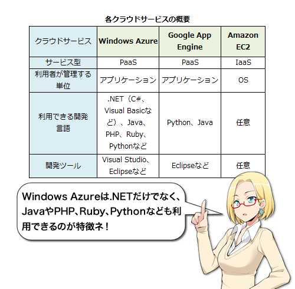
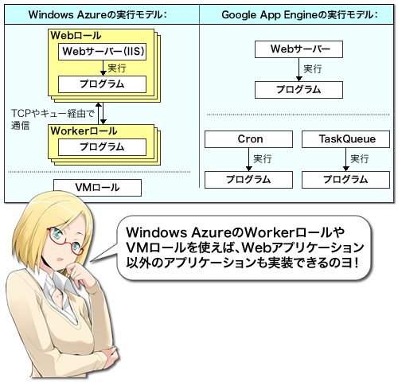
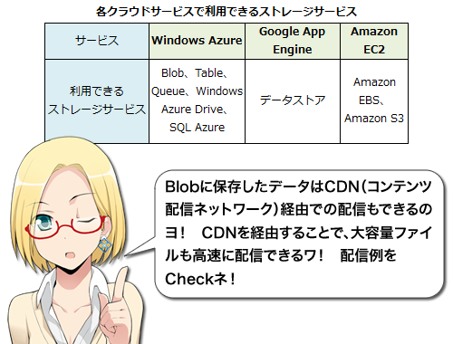
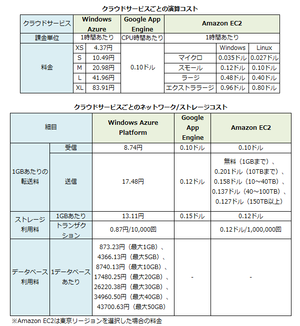

AzureとApp Engine、EC2徹底比較！ 62
意外に違う各社のクラウドサービス 部門より
利用者が自由にアプリケーションを実行できるクラウドサービスとして有名なのがGoogle App EngineやAmazon EC2だろう。それでは、Windows Azureはこれらのクラウドサービスと比べてどう違うのだろうか。また、読者の皆様が気になるポイントはどこだろうか？
各クラウドサービスの概要
Windows AzureとGoogle App Engineはアプリケーションを実行するプラットフォームを提供する「PaaS（Platform as a Service）」、Amazon EC2はOSを実行する仮想環境を提供する「IaaS（Infrastructure as a Service）」となる。PaaSでは開発に利用できる言語に制限がある点に注意が必要だ。

アプリケーションの実行モデル
Windows Azureでは、「ロール」という単位でアプリケーションを実行する。ロールにはWebサーバー（IIS）と連携してWebアプリケーションを実行させる「Webロール」、バックエンド処理などを実行させる「Workerロール」、Hyper-V上で動作するWindows Server 2008 R2を提供する「VMロール」がある。
Google App Engineは基本的にはWebアプリケーションを実行するためのプラットフォームであり、プログラムは基本的にはWebサーバーから実行される（ただし、定期的にタスクを実行する「App Engine Cron」やキューに入れられた処理を実行する「TaskQueue」というサービスも提供されている）。

利用できるストレージとデータベース
Windows Azureでは名前ベースの「Blob」、key-valueストア「Table」、キュー型の「Queue」というストレージと「Windows Azure Drive」という仮想ドライブ、そしてSQLデータベース「SQL Azure」が提供されている。Google App Engineのストレージはkey-valueストアの「データストア」のみだ。Amazon EC2では仮想マシンからマウントできる「Amazon EBS」やオンラインストレージサービス「Amazon S3」が利用できる。

CDNによるファイル配信例
CDNを利用しないファイル配信URL：
- http://azurearchive.blob.core.windows.net/contents/functions.jpg
- http://azurearchive.blob.core.windows.net/contents/WindowsAzureOverview.pdf
{kind=link}
CDN経由でのファイル配信URL：
- http://az30419.vo.msecnd.net/contents/functions.jpg
- http://az30419.vo.msecnd.net/contents/WindowsAzureOverview.pdf
{kind=link}
料金
Windows Azure、Google App Engine、Amazon EC2はどれも基本的には従量課金型のサービスだ。Windows AzureやAmazon EC2は実行時間単位の課金、App EngineはCPU時間あたりの課金となるが、料金に大きな違いはないと言える。なお、現在Windows AzureではXSインスタンス750時間分、Sインスタンス25時間分、20GBのストレージなどが月々無料で利用できる「Windows Azure Platform 導入特別プラン」が用意されており、この範囲内であれば無料での利用が可能だ。

※それぞれのサービスの料金ページ：
- Windows Azure：http://www.microsoft.com/japan/windowsazure/offers/
- Google App Engine：http://code.google.com/intl/ja/appengine/docs/quotas.html
- Amazon EC2：http://aws.amazon.com/jp/ec2/
Windows Azure Platform 30日間無料パス
現在Windows Azureのプロモーションとして、30日間無償でAzureを利用できる期間限定のキャンペーンプログラム「Windows Azure Platform 30日間無料パス」が提供されている。クレジットカード登録不要でWindows Azureの利用が可能だ。下記のURLにアクセスし、プロモーションコード「CLOUDGIRL」を入力することで利用できる。 http://windowsazurepass.com/?Campid=F029BEBF-7370-E011-8167-001F29C6FB82
うわっ 広告見せられたw (スコア:2, すばらしい洞察)